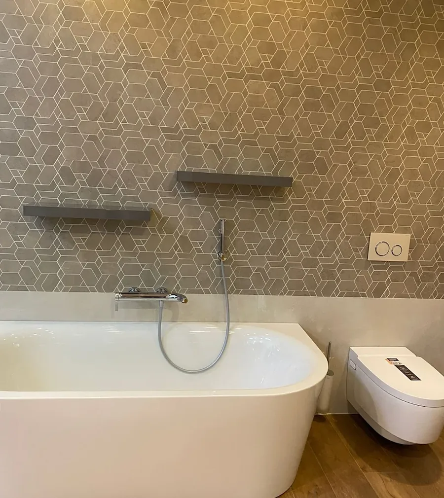
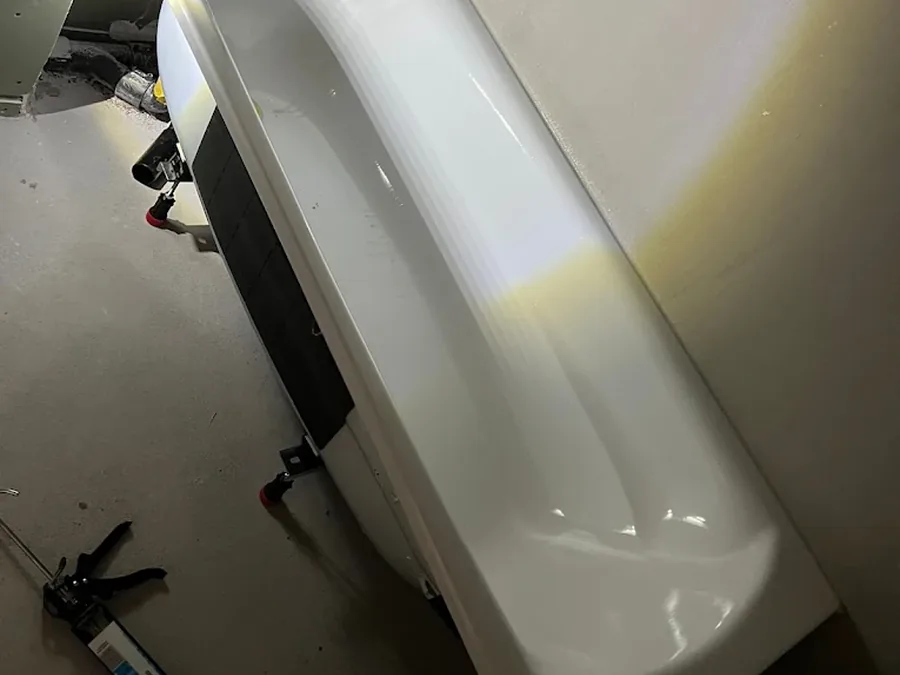
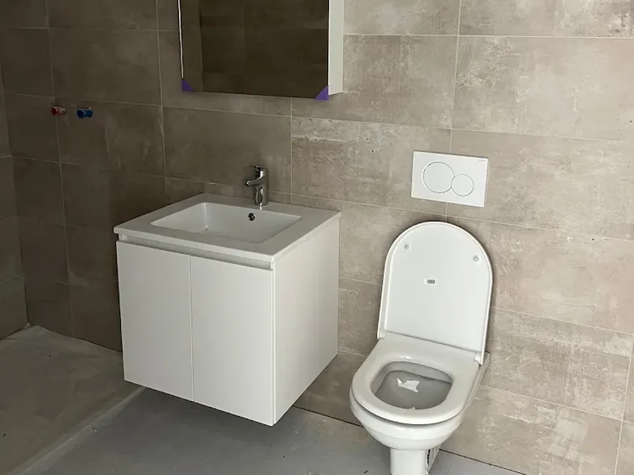
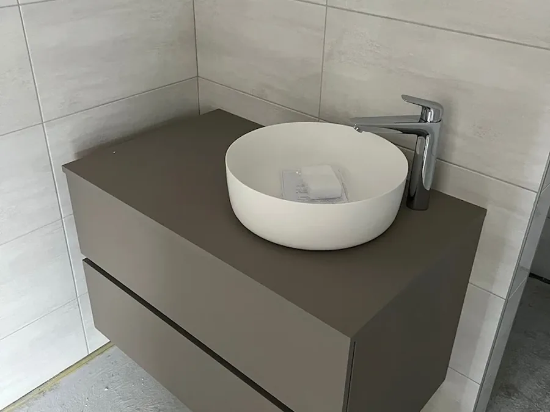
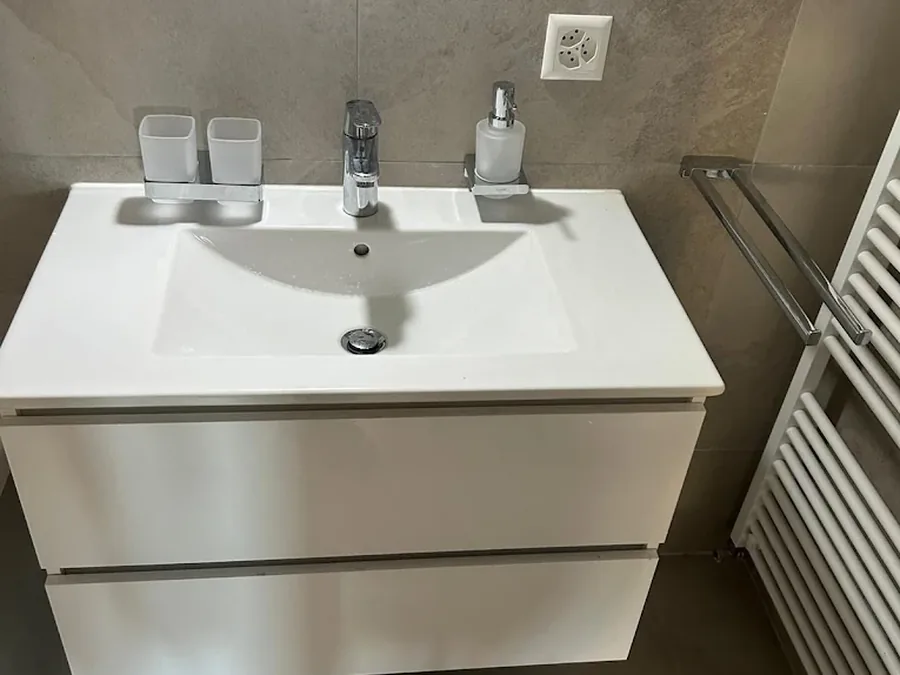
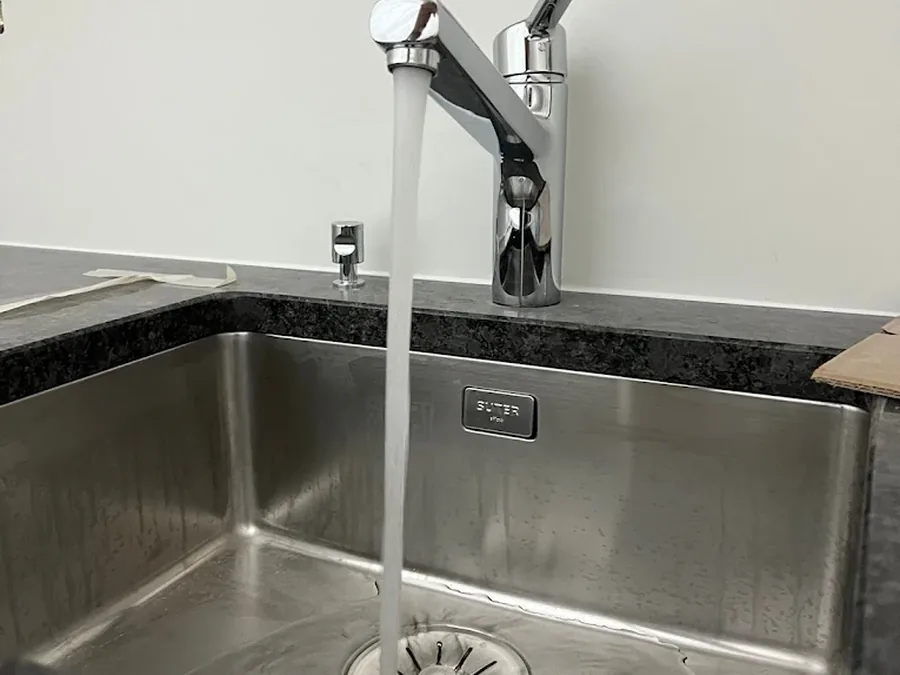
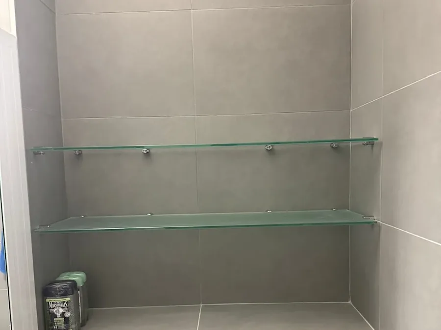
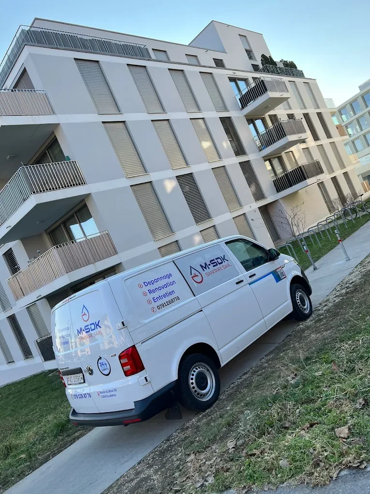

Fuite d'eau
Sous l'évier, derrière un WC, au plafond du voisin : on cherche l'origine avant de casser quoi que ce soit.
Appeler pour ce problèmeVotre sanitaire à Écublens. On se déplace pour le dépannage, la réparation et l'installation à Lausanne et dans toute la région — devis gratuit, prix annoncé avant de commencer.

Rénovation complète, ÉcublensRéalisation M-SDK Sanitaire Sàrl
Dépannage
Un problème sanitaire ne s'arrange jamais tout seul. Décrivez-le au téléphone ou envoyez-nous une photo sur WhatsApp : vous saurez tout de suite si on peut passer, et ce que ça coûte.
Sous l'évier, derrière un WC, au plafond du voisin : on cherche l'origine avant de casser quoi que ce soit.
Appeler pour ce problèmeÉvier, douche, baignoire ou colonne qui refoule : débouchage et contrôle de l'évacuation.
Appeler pour ce problèmeChasse qui coule en continu, cuvette bouchée, mécanisme fatigué, plaque de commande cassée.
Appeler pour ce problèmeBoiler en panne, groupe de sécurité qui fuit, chauffe-eau entartré : diagnostic et remise en service.
Appeler pour ce problèmeMitigeur qui goutte, débit faible, cartouche usée, raccord qui suinte : réparation ou remplacement.
Appeler pour ce problèmeRadiateur qui ne chauffe plus, air dans le circuit, pression trop basse, sèche-serviettes hors service.
Appeler pour ce problèmeNos prestations
Installation, dépannage et entretien : nous couvrons l'ensemble du sanitaire et du chauffage pour les particuliers, les régies et les propriétaires de Lausanne et de sa région.
Fuite d'eau, canalisation bouchée, chasse qui coule, robinetterie défectueuse, boiler en panne. On identifie la cause, on vous annonce le prix, puis on répare.

Pose complète d'appareils et de tuyauterie, dans le neuf comme en rénovation : WC suspendus, lavabos, douches, baignoires, colonnes et raccordements aux normes suisses.

Un projet clé en main : dépose de l'ancien, sanitaire, raccordements et pose des équipements. Vous suivez un seul interlocuteur du premier devis à la remise des clés.

Installation, remplacement et entretien de radiateurs, sèche-serviettes et distribution de chaleur. Purge, mise en pression et contrôle de l'installation.

Éviers, mitigeurs, siphons et raccordements d'électroménager. Remplacement à l'identique ou reprise complète de l'arrivée d'eau et de l'évacuation.

Détartrage de boiler, contrôle des groupes de sécurité, entretien de robinetterie et petits travaux préventifs — pour éviter la panne coûteuse.

Comment ça se passe
Téléphone ou WhatsApp. Décrivez le problème, envoyez une photo si vous en avez une.
Visite sur place ou évaluation à distance selon l'urgence et la nature des travaux.
Un prix écrit, détaillé et sans engagement. Vous savez exactement ce que vous payez.
Travaux réalisés proprement, chantier laissé net, et on reste joignable après coup.
Réalisations
Salles de bain, douches, WC suspendus et cuisines réalisés à Écublens et dans les communes voisines. Cliquez sur une photo pour l'agrandir.
Plus on intervient tôt, moins la réparation coûte. Un appel suffit pour savoir où vous en êtes — et vous n'êtes engagé à rien.
Avis clients
Tous les avis ci-dessous proviennent de la fiche Google de M-SDK Sanitaire Sàrl. Ils sont publics et vérifiables.
« Très satisfait du travail fait chez moi, ouvrier très professionnel, je recommande. »
Réponse de M-SDKMerci pour la confiance 👍
« Très bon sanitaire, très professionnel, je recommande fortement pour tous travaux. »
Réponse de M-SDKMerci beaucoup pour le commentaire et la confiance Boudeffar.
« Je vous recommande M‑SDK les yeux fermés. Qualité et efficacité. »
Réponse de M-SDKMerci Alexandre pour le commentaire et la confiance !
« Excellent travail, très professionnel. »
Réponse de M-SDKMerci pour la confiance et le commentaire Benji !
« 👍👍 »
Réponse de M-SDKMerci Tao pour votre commentaire et votre confiance.
« Trois clients de plus ont laissé cinq étoiles sur la fiche Google, sans commentaire écrit. »
Déjà client ? Laissez votre avis sur Google

L'entreprise
M-SDK Sanitaire Sàrl est une entreprise sanitaire indépendante établie à Écublens, dans le canton de Vaud. Pas de centrale d'appel, pas de sous-traitance en cascade : la personne qui vous répond au téléphone est celle qui vient travailler chez vous. C'est aussi pour cela que nos huit avis Google sont tous à cinq étoiles.
Pourquoi nous
Pas de centrale d'appel, pas de sous-traitance en cascade. Celui qui répond au téléphone est celui qui se déplace, et qui reste joignable après l'intervention.
On diagnostique, on annonce le montant, et on ne commence qu'ensuite. Le devis est gratuit et sans engagement, même si vous décidez finalement de ne rien faire.
Sàrl inscrite au registre du commerce (CHE-323.718.742), atelier à Écublens, et huit avis Google publics — tous à cinq étoiles. Rien que vous ne puissiez contrôler vous-même.
Zone d'intervention
Basés Route du Bois 59 à Écublens, nous intervenons à Lausanne et dans l'ensemble de la région lausannoise, de Morges au Gros-de-Vaud. Votre commune n'est pas dans la liste ? Appelez-nous, on vous le dira franchement.
Contact
Le plus rapide reste le téléphone. Mais si vous préférez écrire, remplissez le formulaire : décrivez la situation en deux lignes, nous revenons vers vous avec un devis gratuit.
Sans engagement. Réponse rapide pendant les heures d'ouverture.
Merci ! Nous revenons vers vous rapidement pendant les heures d'ouverture. Pour une urgence, appelez directement.
Deux minutes au téléphone valent mieux qu'une heure à chercher. Appelez, ou envoyez une photo du problème sur WhatsApp : souvent, ça suffit pour vous répondre.
Questions fréquentes